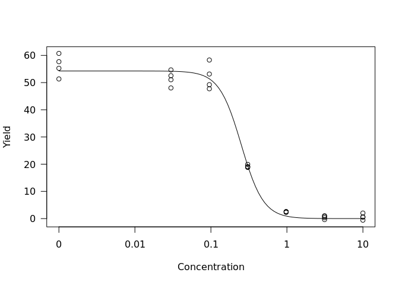
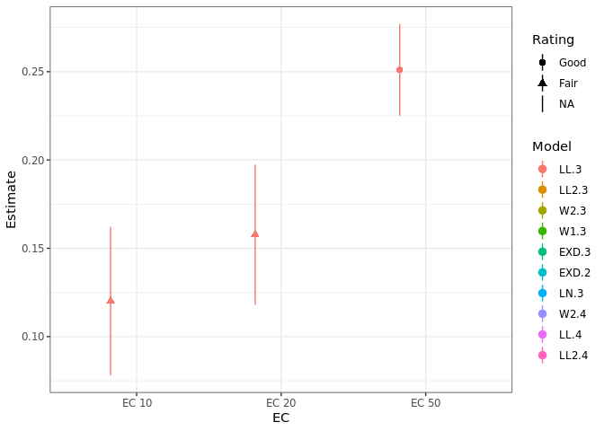
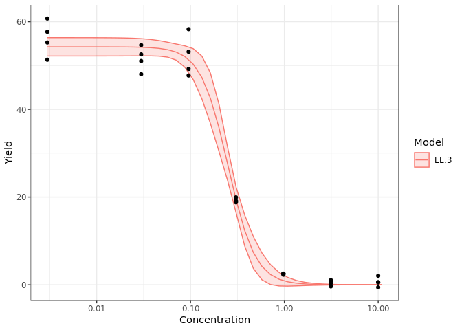
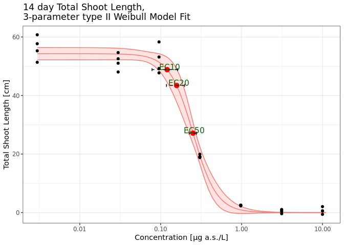

The goal of drcHelper is to assist with routine dose-response analysis by providing a collection of helper functions and standalone functions that are generic and may be useful beyond our organization.
As part of the GLP stat pilot project, this package serves as a cornerstone for the second use case, EFX Statistics. It will streamline GLP statistical analyses for various dose-response studies and test assays within our registration data package. This ensures that the analyses remain current, state-of-the-art, and flexible enough to adapt to new regulatory requirements while complying with GLP standards.
The package also includes test cases and examples to help the regulatory statistical community understand the reasons behind different outcomes. For instance, point estimations and p-values may vary depending on the parties involved, the functions used, or the packages selected. It aims to promote a harmonized understanding of methodologies and provide a foundation for standardized practices in the regulatory statistics field for plant protection product registration. Additionally, it is hoped that this project will contribute to the ongoing OECD 54 revision process.
Installation
You can install the development version of drcHelper from GitHub with:
# install.packages("devtools")
devtools::install_github("Bayer-Group/drcHelper")Data Overview
library(drcHelper)
library(drc)
library(dplyr)
library(purrr)
library(ggplot2)
theme_set(theme_bw())
sum1 <- oecd201 %>% group_by(Time,Treatment) %>% summarise(Yield_mean=mean(Yield),Yield_sd=sd(Yield),GrowthRate_mean=mean(GrowthRate),GrowthRate_sd=sd(GrowthRate))
sum0 <- sum1%>%filter(Treatment=="Control")%>%rename(Yield0=Yield_mean,GrowthRate0=GrowthRate_mean)%>%dplyr::select(c(Time,Yield0,GrowthRate0))
# sum0
sumtab <- left_join(sum1%>%filter(Time>0),sum0) %>% mutate(Yield_Inhibition=(Yield0-Yield_mean)/Yield0*100,GrowthRate_Inhibition=(GrowthRate0-GrowthRate_mean)/GrowthRate0*100) %>% dplyr::select(c(Time,Treatment,Yield_mean,Yield_sd,Yield_Inhibition,GrowthRate_mean,GrowthRate_sd,GrowthRate_Inhibition))
sumtab%>%dplyr::select(c(Yield_mean,Yield_sd,Yield_Inhibition))%>%filter(Time==72)%>%knitr::kable(.,digits = 2,caption="<center><strong>Yield Summary at Time 72h<strong><center>",escape = FALSE)##%>% kableExtra::kable_styling(bootstrap_options = "striped")##%>%kableExtra::kable_classic_2()| Time | Yield_mean | Yield_sd | Yield_Inhibition |
|---|---|---|---|
| 72 | 56.26 | 3.97 | 0.00 |
| 72 | 51.57 | 2.79 | 8.33 |
| 72 | 52.11 | 4.72 | 7.38 |
| 72 | 19.22 | 0.49 | 65.84 |
| 72 | 2.47 | 0.13 | 95.61 |
| 72 | 0.45 | 0.62 | 99.20 |
| 72 | 0.64 | 1.07 | 98.86 |
sumtab%>%dplyr::select(c(GrowthRate_mean,GrowthRate_sd,GrowthRate_Inhibition))%>%filter(Time==72)%>%knitr::kable(.,digits = 2,caption="<center><strong>Growth Rate Summary at Time 72h<strong><center>",escape = FALSE)##%>%kableExtra::kable_classic()| Time | GrowthRate_mean | GrowthRate_sd | GrowthRate_Inhibition |
|---|---|---|---|
| 72 | 1.35 | 0.02 | 0.00 |
| 72 | 1.32 | 0.02 | 2.09 |
| 72 | 1.32 | 0.03 | 1.89 |
| 72 | 1.00 | 0.01 | 25.69 |
| 72 | 0.41 | 0.01 | 69.25 |
| 72 | 0.09 | 0.18 | 93.04 |
| 72 | 0.09 | 0.28 | 93.16 |
Model Fitting and Comparison For Yield
datTn<- subset(oecd201,Time==72)
mod <- drm(Yield~Concentration,data=datTn,fct=LL.3())
fctList <- list(LL2.3(),W2.3(),W1.3(),EXD.3(),EXD.2(),LN.3(),W2.4(),LL.4(),LL2.4())
plot(mod,type="all")
res <- mselect.plus(mod,fctList = fctList )
#> [1] "Model not Converged, Please consult a statistician."
#> [1] "Model not Converged, Please consult a statistician."
#> [1] "Model not Converged, Please consult a statistician."
#> [1] "Model not Converged, Please consult a statistician."
#> [1] "Model not Converged, Please consult a statistician."
#> [1] "Model not Converged, Please consult a statistician."
#> [1] "Model not Converged, Please consult a statistician."
#> [1] "Model not Converged, Please consult a statistician."
#> [1] "Model not Converged, Please consult a statistician."
modList <- res$modList
edResTab <- mselect.ED(modList = modList,respLev = c(10,20,50),trend=datTn$Trend_Yield[1])
plot.edList(edResTab)
resComp <- drcCompare(modRes = res,trend="Decrease")Note that by default settings, the fitted models did not converge except for the LL.3 model.
knitr::kable(edResTab[1:3,],caption = "14 day TSL Yield",digits = 3)| .id | Estimate | Std. Error | Lower | Upper | NW | Rating | EC |
|---|---|---|---|---|---|---|---|
| LL.3 | 0.120 | 0.020 | 0.078 | 0.162 | 0.700 | Fair | EC 10 |
| LL.3 | 0.158 | 0.019 | 0.118 | 0.197 | 0.504 | Fair | EC 20 |
| LL.3 | 0.251 | 0.013 | 0.225 | 0.277 | 0.206 | Good | EC 50 |
14 day TSL Yield
knitr::kable(resComp[1,],caption = "14 day TSL Yield, Model Comparison",digits = 3)| logLik | IC | Lack of fit | Res var | Certainty_Protection | Steepness | No Effect p-val | |
|---|---|---|---|---|---|---|---|
| LL.3 | -67.245 | 142.489 | 0.117 | 7.994 | Medium | Medium | 0 |
14 day TSL Yield, Model Comparison
plot.modList(modList,scale="logx")Yield Model Fits
plot.modList(modList[c(1,2,3,4)],scale="logx",npts=40)
p <-plot.modList(modList[c(1)],scale="logx",npts=80)+theme(legend.position = "none")+ggtitle("14 day Total Shoot Length, \n3-parameter type II Weibull Model Fit")
addECxCI(p=p,object=modList[[1]],EDres=NULL,trend="Decrease",endpoint="EC", respLev=c(10,20,50),
textAjust.x=0.01,textAjust.y=1,useObsCtr=FALSE,d0=NULL,textsize = 4,lineheight = 1,xmin=0.012)+ylab("Total Shoot Length [cm]") + xlab("Concentration [µg a.s./L]")
## ggsave("TSL_14d_Yield.png")
resED <- t(edResTab[1:3, c(2,4,5,6)])
colnames(resED) <- paste("EC", c(10,20,50))
knitr::kable(resED,caption = "Total Shoot Length Growth Yield at 14 day",digits = 3)| EC 10 | EC 20 | EC 50 | |
|---|---|---|---|
| Estimate | 0.120 | 0.158 | 0.251 |
| Lower | 0.078 | 0.118 | 0.225 |
| Upper | 0.162 | 0.197 | 0.277 |
| NW | 0.700 | 0.504 | 0.206 |
Total Shoot Length Growth Yield at 14 day
mod <-modList[[1]]
edres <- ED.plus(mod,c(5,10,20,50),trend="Decrease")
pander::pander(as.data.frame(edres))| Estimate | Std. Error | Lower | Upper | |
|---|---|---|---|---|
| EC 5 | 0.09351 | 0.02005 | 0.05222 | 0.1348 |
| EC 10 | 0.1201 | 0.02041 | 0.07812 | 0.1622 |
| EC 20 | 0.1577 | 0.01929 | 0.118 | 0.1974 |
| EC 50 | 0.251 | 0.01258 | 0.2251 | 0.2769 |
| Estimate | Std. Error | t-value | p-value | |
|---|---|---|---|---|
| b:(Intercept) | 2.982 | 0.5414 | 5.508 | 1.008e-05 |
| d:(Intercept) | 54.27 | 1.017 | 53.37 | 1.391e-27 |
| e:(Intercept) | 0.251 | 0.01258 | 19.95 | 3.579e-17 |
Contribution Notes
- Please create a pull request to contribute to the development of packages. Note that source branch is the branch you are currently working on when you run the
gh pr createcommand.
gh pr create --title "Title of the pull request" --body "Description of the pull request"
gh pr create --title "Title of the pull request" --body "Description of the pull request" --base developTo use the pkgdown github workflow, some of the vignettes need to be pre-knit before pushing to the remote github repository.
knitr::knit("vignettes/drcHelper.Rmd.orig", output = "vignettes/drcHelper.Rmd")
knitr::knit("vignettes/articles/Example_RSCABS.Rmd.orig", output = "vignettes/articles/Example_RSCABS.Rmd")
knitr::knit("vignettes/articles/Examples using NLS.Rmd.orig", output = "vignettes/articles/Examples using NLS.Rmd")
knitr::knit("vignettes/articles/Examples_drc.Rmd.orig", output = "vignettes/articles/Examples_drc.Rmd")
knitr::knit("vignettes/articles/Examples_oecd201.Rmd.orig", output = "vignettes/articles/Examples_oecd201.Rmd")